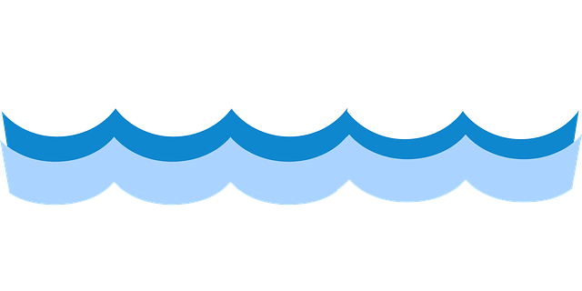
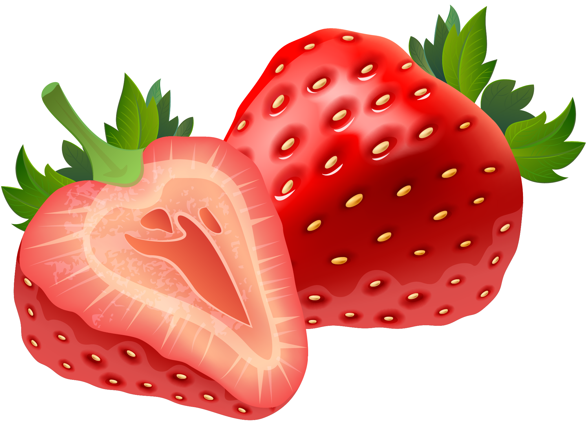

В это лето я впервые был на море, сбылась моя мечта. 
Ездили мы всей семьёй на десять дней в Сочи. На берегу моря я нашёл красивые раковины.
В Сочи мы пошли в зоопарк и там я видел черепаху.
Остальную часть каникул я провёл на даче у бабушки, собирал клубнику. 
На дачу ко мне приехал друг и мы ловили рыбу, играли в настольные игры.
Нужно разобрать фотографии на телефоне.